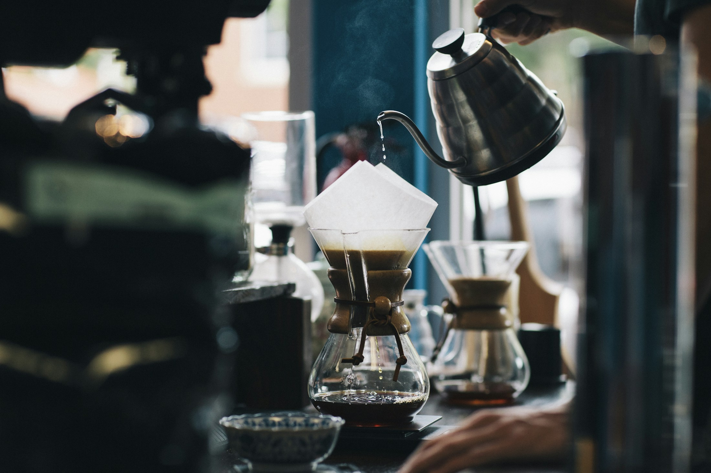
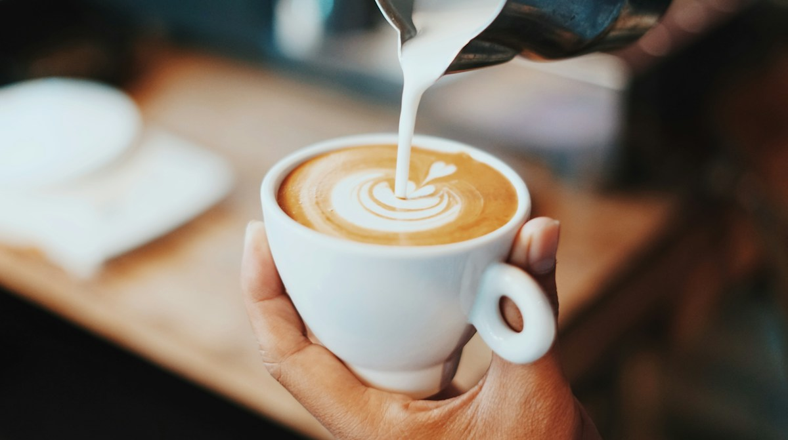
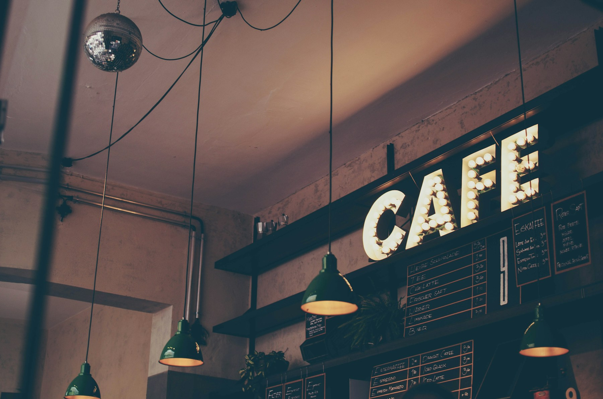

ЗАГЛУШКА / 01
За любимым кофе.
Здесь будет отзыв о той самой чашке, за которой хочется вернуться.

Хорошему нужно время.
Свежий кофе. Тёплый круассан.
И целый мир, который может подождать.
На пару страниц книги. На разговор без телефона. На первый глоток, который делает утро лучше. Мы придумали «ТИШЕ» для таких простых вещей.
В чашке — характер.
В деталях — забота.
В моменте — вы.

До последнего
«ещё минутку».

ТАК МОЖЕТ ВЫГЛЯДЕТЬ ВАША КОФЕЙНЯУ окна — чтобы смотреть на город. За общим столом — чтобы быть ближе. В тихом углу — чтобы наконец дочитать.
Задержаться на чашкуШоколадный, ореховый или ягодный — в меню найдётся ваш вкус.
Любимые завтраки в любое время. Даже если ваше утро начинается в два.
Хрустящая выпечка, сезонные сочетания и хороший повод встретиться.
Здесь появятся отзывы наших гостей.
Пока — только место для будущих историй.
Здесь будет отзыв о той самой чашке, за которой хочется вернуться.
Здесь будет история о неспешном завтраке и маленькой паузе посреди дня.
Здесь будет впечатление от уютного вечера, тёплой встречи и нашей атмосферы.
Демонстрационный раздел: настоящие отзывы ещё не добавлены.
Однажды здесь появится маршрут к вашему любимому столику. А пока представьте тихую улицу и аромат свежего кофе.
Для встречи, свидания или часа наедине с собой. Выберите удобное время — остальное покажем в демо.
Это демонстрационный сайт. Настоящая бронь не создаётся, данные никуда не отправляются.